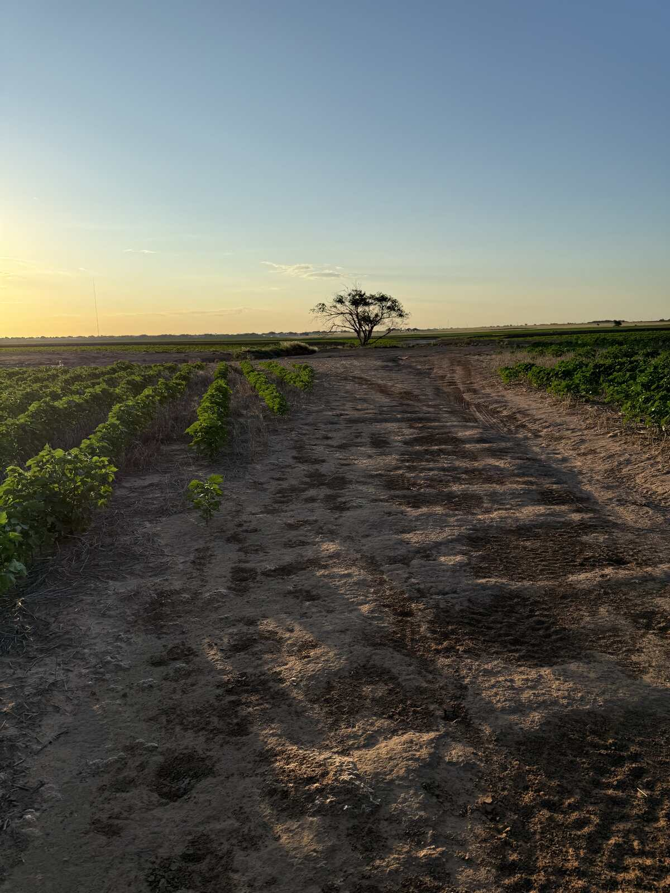
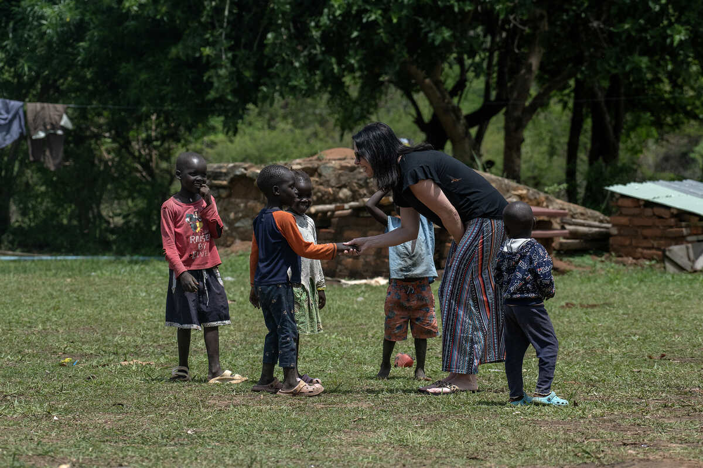

Author · Speaker · Ministry Leader
This Sacred
Unraveling
A Holy Undoing That Makes You Whole
For the woman who has built a good life and lost herself inside it. Jodi Ashcraft writes about the gentle coming undone that led her from a West Texas dirt road into the churches of South Sudan, and about the freedom waiting on the other side.
Streamline Books
This Sacred Unraveling
A Holy Undoing That Makes You Whole
Cover reveal
August 2026
Coming Fall 2026
Ten chapters, each anchored by an ancient Hebrew word. One gentler, truer way to live your faith.
This is a book for the one who kept every plate spinning until the spinning became her whole life. Through Scripture, story, and the ancient Hebrew words that shaped it, from tohu v’vohu to tikkun olam, Jodi walks through fear, shame, and unbelief toward a faith that breathes.
God unravels with purpose. What He loosens, He means to remake, and the woman underneath the coming apart is freer than the one who held it all together.
Explore the Book
About Jodi
Her life looked whole from the outside. Underneath, she was coming undone.
Jodi Ashcraft serves as chief of staff and women’s ministry director at Empower One, a Christian missions organization walking alongside indigenous leaders in South Sudan, Sudan, and the Democratic Republic of Congo. She lives in Lubbock, Texas, with her husband Jason, where the cotton fields meet a very big sky.
Her story is one of a good life she got lost inside, a long mentorship, and the quiet moment God started pulling threads. She writes for anyone who recognizes herself in that sentence.
Read Her Story
Where the Unraveling Led
The story behind the book is still being written a world away.
Jodi’s own undoing led her into the work of Empower One, where indigenous leaders are planting churches and training pastors among their own people. The joy in this photo is real. Come meet the people behind it.
Meet Empower OneThe Weekly Essay
Saturday mornings, in your inbox
This Sacred Unraveling is also a space on Substack, where Jodi writes a free weekly essay on spiritual formation, personal unraveling, and life between West Texas and the field. New essays arrive Saturdays at 7 a.m. Central.
Free, weekly, and unsubscribe anytime.